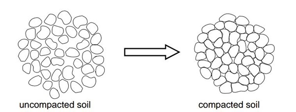

Table of contents |
|---|
| Abstract |
| Introduction |
| Analysis and discussion |
| References |
Modern knowledge and technology enable us to create new buildings which are no longer prone to earthquakes which is important in earthquake prone areas such as Japan and Chile. However historical buildings which are decades and even centuries of years old were not built with our current knowledge of buildings. This conference project will discuss what soil liquefaction is and the solutions civil engineers discovered to ensure the developments and protection of these structures. Soil liquifaction is considered one of the most challenging natural hazards for Civil Engineers.
“Active Learning (Angluin, 1988, Cohn et al., 1994) is a paradigm where a concept is learnt by an intelligent machine through the interaction of an oracle with the machine system, over a sequence of learning epochs. A distinctive component in an active system is the querying strategy, used to sample candidate training instances from a pool and evaluate them for informativeness, i.e., their potentialto improve the classification model. Various strategies have been proposed including; Query by Committee (Seung et al., 1992), Monte Carlo estimation (Roy and McCallum, 2001), uncertainty sampling (Lewis and Gale, 1994) and version space reduction (margin sampling) (Tong and Koller, 2001). Irrespective of how the most informative pattern instances are chosen at each epoch they are presented for labeling, to a machine (database) or human oracle that has knowledge of the class labels. After adding the newly labeled instances to the current training set, a revised model is subsequently induced. A goal of this process is to achieve an efficient, incremental advancement of learning at each epoch. The process is continued until some stopping criterion has been met, such as reaching a stage where information from the selected instances is contrary to the model, causing the classifier confidence to drop, as in Vlachos (2008).”

Visually, it may seem like the land is suitable for building however personal judgement is not always reliable for these scenarios. Personal judgement does not consider details such as ground water levels, which is crucial to earthquake prone countries like Japan. All soils have a minimum limit of magnitude for of soil liquefaction to occur. There are soil treatment methods which’ll improves the soil quality to ensure land is suitable for construction. It’s said that on an earthquake with as small as magnitude as 4.5 can cause liquefaction but only for land that’s not even suitable for the lightest of buildings. Furthermore, for land suitable for building structures, a minimal magnitude of 5 can cause liquefaction. Therefore for countries effected by larger magnitudes, they use soil treatment methods toensure the soil can resist higher magnitudes. Soil liquefaction is the process where soil temporarily loses it strength and stops its ability to support buildings. It will have a liquid like nature and therefore cause things like buildings to sink. Soil liquidation usually occur to water saturated soil. During the phenomenon of earthquakes, the space between the soil particles which are filled with water exerts pressure which causes the soil particles to spread out, hence lowering its density. Once a building is affected by soil liquefaction it is difficult to near impossible to fix the scenario due to its mass. So, it’s important to come up with a solution before an earthquake hits. Vibroflotation is a method a soil treatment. It’s a ground improvement technique which enhances the soil quality by densifying loose granular soils. The process involves a probe and as its lowered down into the soil, it’ll generate vibrations which reorganised the soil particle’s structure and makes them more compact together. Hence increasing its density allowing it to both support heavy structures and less prone to soil liquefaction. Other instances to further minimise the risk of soil liquefaction, they add additional settlement like gravel creating stone columns. Stone columns increases the maximum capacity which land can hold a building. As the stone collum is inserted to the land, they displace water that’s already trapped in the soil sediment. Furthermore, the stone column acts as a water pressure evacuation point and mitigates further risks of soil liquefaction in case an earthquake hit. However, this processdoes also have its drawbacks. For regular housing, vibroflotation is too expensive for a regular household. It is only suitable for large scale constructions. Factors such as soil conditions, equipment used, and depth of the treatment can further affect the costs of vibroflotation. Another issue is the environment, depending on the area, it may not meet the spatial requirements the equipment used. More environmental factors include noise population and depending on the location/country, they may restrict the use of it as it causes to much disturbance to wildlife and the residents.Table 1: Data on cost and lifespan of bridge repairs
| £ Cost of repairs | Lifespan of repairs (years) |
|---|---|
| 0.7 m | 2 |
| 3.3 m | 4 |
| 2.6 m | 5 |
| 17.4 m | 7 |
| 8.8 m | 9 |